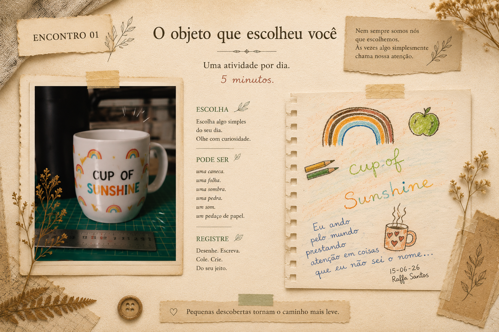
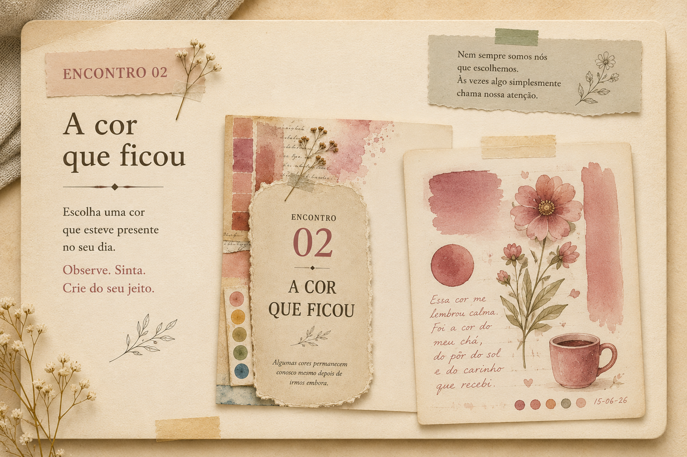
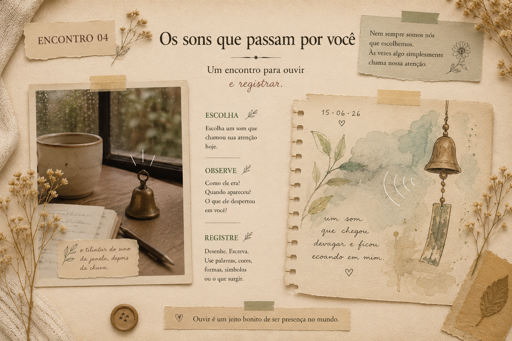
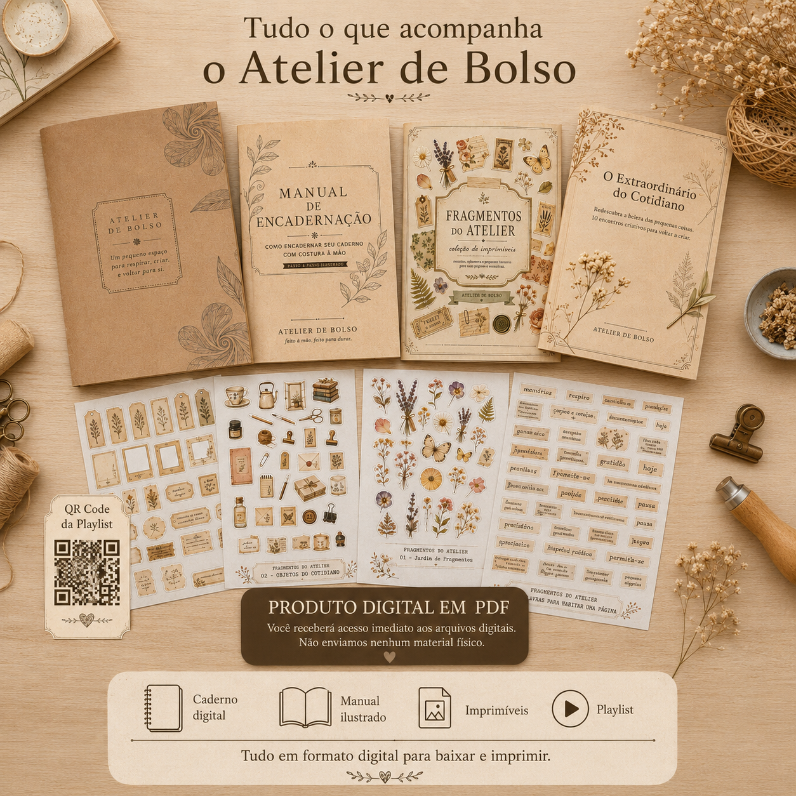
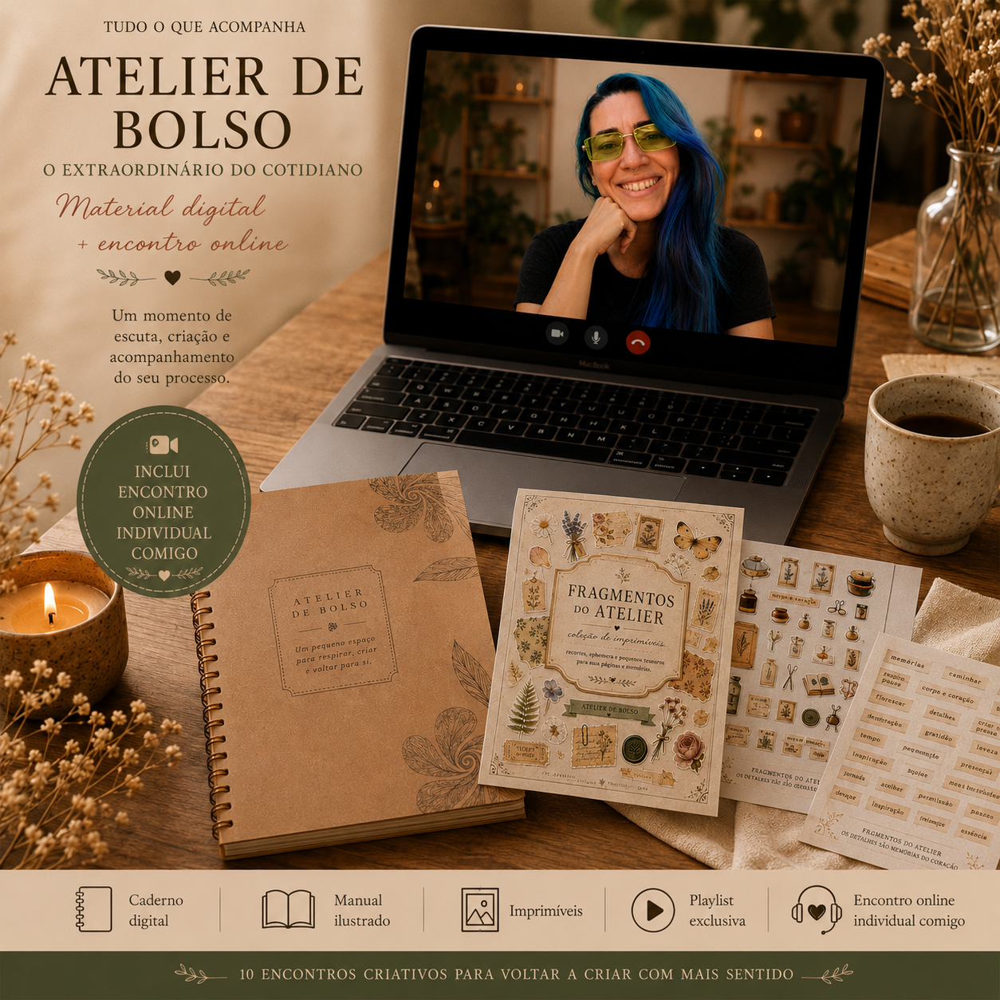
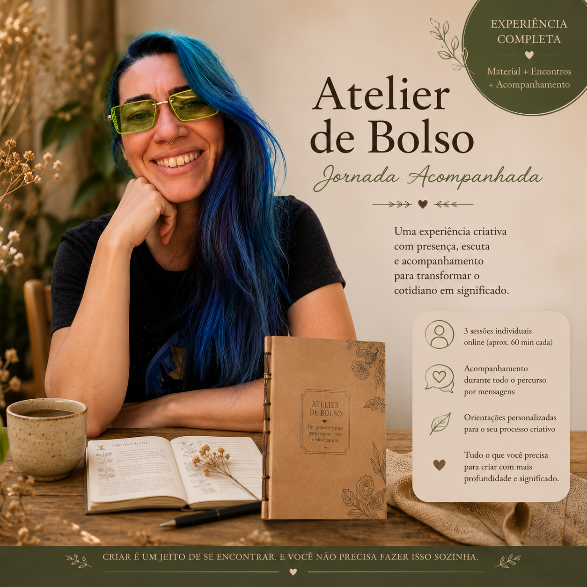
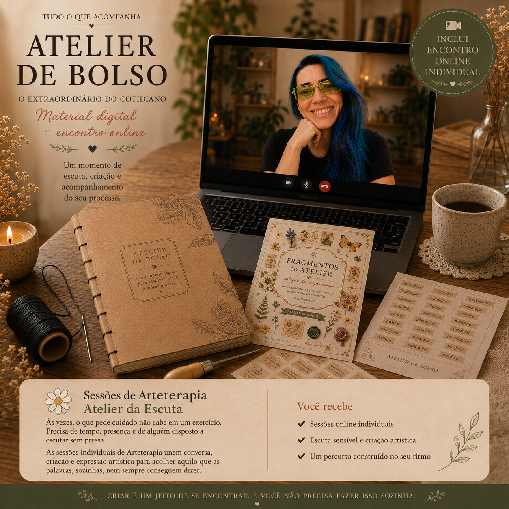

O objeto que escolheu você
Um convite para observar um objeto comum como se fosse a primeira vez.
Um pequeno espaço de escuta que cabe na sua rotina.
O Atelier de Bolso nasceu da ideia de que nem sempre precisamos de grandes mudanças para voltar a nos escutar.
Às vezes, bastam alguns minutos de atenção. Um objeto. Um som. Uma memória. Uma página em branco.
Cada encontro é um convite para observar, criar e cultivar aquilo que existe dentro de você.
Para fazer no seu ritmo, no seu canto, com aquilo que você já tem por perto.
Pequenas propostas para abrir espaço entre o barulho do dia e aquilo que pede escuta.
Um convite para observar um objeto comum como se fosse a primeira vez.
Cores, marcas, texturas e memórias escondidas no cotidiano.
Um encontro para registrar sensações despertadas pelos sons ao redor.
Um caderno de presença, com cara de pausa boa.



Escolha a experiência que faz mais sentido para você.

Um convite para desacelerar e voltar a criar sem pressa.
Durante 10 encontros criativos, você será conduzida por pequenas propostas de observação, escrita, desenho, colagem e registro sensível do cotidiano.

Além do percurso criativo, um momento para conversar sobre aquilo que surgiu durante a experiência.
Depois de percorrer o Atelier, você terá um encontro online individual para compartilhar seu processo, tirar dúvidas e receber uma escuta acolhedora.

Uma experiência para quem deseja ser acompanhada do início ao fim.
Ao longo dos 10 encontros, caminharemos juntas, com sessões individuais, espaço para compartilhar suas produções e acompanhamento durante todo o percurso.

Às vezes, o que pede cuidado não cabe em um exercício. Precisa de tempo, presença e de alguém disposto a escutar sem pressa.
As sessões individuais de Arteterapia unem conversa, criação e expressão artística para acolher aquilo que as palavras, sozinhas, nem sempre conseguem dizer.
O Kit Digital é entregue em arquivos PDF para download. Nenhum material físico é enviado.